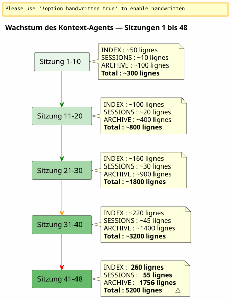

Sliding Window et Vague Froide : Wenn der Agent-Kontext explodiert und es muss archiviert werden, ohne etwas zu verlieren
Publié le 26 April 2026
Zusammenfassung
Nach 48 Sitzungen an einem einzelnen Projekt und insgesamt 150+, begann das von mir sorgfältig konstruierte Eager/Lazy-Governance-System sich zu verstopfen. Die Agenten-Dateien, die leicht sein sollten, wogen insgesamt 5200 Zeilen. Der automatisch geladene Kontext wuchs schneller, als ich ihn kontrollieren konnte. Dieser Artikel beschreibt, wie ich ein Backup-Mechanismus konzipiert habe — zwischen sliding window und identischer kalter Welle — um einen aktiven, leichtgewichtigen Kontext beizubehalten, ohne je etwas zu verlieren.
Das Signal: 5200 Zeilen
Ich bin mitten in Sitzung 048 auf`magic-stick`, mein Projekt zum Erstellen einer Linux-Live-ISO. Opencode beobachtet mich. Wie immer hat er automatisch meine Eager-Dateien am Beginn der Sitzung geladen —AGENT.adoc, PROMPT_REPRISE.adoc, `.agents/INDEX.adoc`Nichts Ungewöhnliches.
Aber etwas stimmt nicht. Die Antworten sind langsamer. Der Gedankengang ist mehr verwässert. Der Agent vergisst Details, die er vor zwei Nachrichten noch vor Augen hatte.
Ich öffne ein Terminal und tippe:
wc -l .agents/INDEX.adoc .agents/SESSIONS_HISTORY.adoc \
.agents/archives/COMPLETED_TASKS_ARCHIVE_2026-04.adoc260 Zeilen für INDEX. 55 für SESSIONS_HISTORY.1756 für COMPLETED_TASKS_ARCHIVE.
Die Akte`sessions/`fügt noch etwa 3200 Zeilen hinzu. Gesamt :5200 Zeilenvon Kontext, der sich lädt, auf die eine oder andere Weise, im temporären Gehirn des Agenten.
Die Eager/Lazy-Strategie, die ich im vorherigen Artikel theoretisiert hatte, funktioniert — aber sie hat einen Geburtsfehler, den ich nicht vorausgesehen hatte: sie hat nichtkein AlterungsmechanismusJede Sitzung fügt eine Zeile zu INDEX hinzu, einen Absatz zu COMPLETED_TASKS, eine Datei in sessions/. Nichts kommt jemals heraus. Der Kontext ist ein Schneeball, der bei jeder neuen Sitzung wächst.

Es ist kein Bug, sondern eine direkte Folge der Sitzungsbeendigungsprozedur, die jedes Detail akribisch archiviert. Das System ist Opfer seines eigenen Erfolgs.
Die Diagnose: Triple Redundanz
Ich bitte den Agenten, das Problem zu diagnostizieren. Seine Antwort ist sofort und chirurgisch.
Datei |
Zeilen |
Rolle |
Problem |
|
260+ |
EAGER (automatisch geladen) |
Tabelle aller Sitzungen seit der 001 —+1 Zeile pro Sitzung |
|
55 |
EAGER |
Zusammenfassungstabelle —Redundanz mit INDEX |
|
1756 |
EAGER (implizit) |
Vollständige Details aller Aprilsitzungen |
|
~5200 total |
FAUL (angeblich) |
Individuelle Archive, abernicht verwendetweil alles bereits in COMPLETED_TASKS ist |
Der Agent identifiziert vier Wurzelursachen :
-
COMPLETED_TASKS_ARCHIVE absorbiert alles— Statt auf die Archive zu verweisen`.sessions/`, er kopiert jede Sitzung vollständig.
-
INDEX.adoc dient als vollständiger Verlauf— Die Tabelle "Sessions Récentes" enthält 30+ Einträge.
-
SESSIONS_HISTORY.adoc redundant— Gleicher Hinweis wie INDEX, anderes Format.
-
Die Regel LAZY wird nicht eingehalten.— COMPLETED_TASKS ist implizit EAGER, weil es alles enthält.
Ihr Vorschlag ist radikal: INDEX auf 10 Sitzungen zu begrenzen, COMPLETED_TASKS zu leeren, SESSIONS_HISTORY in reines LAZY zu verschieben. Sofortiger Nutzen:~1900 Zeilen eingespart.
Es ist sauber, effizient, logisch. Aber ich habe ein Problem mit diesem Ansatz.
Warum ich die offensichtliche Lösung abgelehnt habe
Die Lösung des Agents ist die eines Ingenieurs, der einen Cache optimiert. Begrenzen. Kürzen. Redundanzen entfernen.
Aber diese 'Redundanzen' sind es nicht. Jede Governance-Datei erfasst einanderer Winkelauf der gleichen Realität:
-
INDEX= Makroansicht, Executive-Dashboard
-
SITZUNGEN_HISTORIE= chronologische lineare Tabelle, bewertet
-
ARCHIV_DER_ERLEDIGTEN_AUFGABEN= detaillierte Erzählung mit Metriken
-
sessions/*.adoc = individuelle Archive, vollständiger Kontext
Es ist keine dumme Duplikation. Es ist von dermehrfach strukturierte Perspektive. Das ist genau das, was wir zum Destillieren brauchen — damit später ein Mensch (oder ein zukünftiger, besser trainierter LLM) die Winkel kreuzen und Muster extrahieren kann.
Stellen Sie sich einen Data Scientist vor, der Ihnen sagt: « Lasst uns 3 von 6 Spalten entfernen, sie sind korreliert. » Wie antworten Sie ihm? Dass Korrelation keine Redundanz ist, wenn jede Spalte eine andere Dimension desselben Phänomens erfasst. Dass genau diese dimensionalen Reichtümer das Dataset nutzbar machen.
Das ist meine Intuition. Und ich verteidige sie gegen die kalte Rationalität des Agenten.
_ Ich sehe keinen stillen Sammelbehälter in meiner Idee. Wir stopfen nicht alles rein, wir verschieben das strukturierte Ergebnis der Sitzungsabschlussprozedur — jede Datei mit ihrem Winkel, ihren Redundanzen, die in Wirklichkeit eine Anreicherung sind. Dieses mehrdimensionale Material wird besser für die Destillation sein. _
Der Agent nimmt den Schlag hin. Und korrigiert sich.
Der Vorschlag: Die kalte identische Welle
Der Agent schlägt dann ein feinerer Mechanismus vor, der meine Intuition eines reichen Datensatzes respektiert, während er das technische Problem des explodierenden Kontexts löst.
Das Prinzip ist einfach und folgt direkt dem Pattern.Heißer/Wärmer/Kalter Speicherangewendet auf die Verwaltung von Archiven:
-
Heiß (EAGER)= die letzten 10 Sitzungen in INDEX, PROMPT_REPRISE der Sitzung N+1, die 2 letzten Sitzungsdateien
-
warm (LAZY)= kürzliche SESSIONS_HISTORY, SCRIPT_VERIFICATION, die gesamte Referenzdokumentation
-
Kalt (backup/)= alles andere, verschobenintakt, ohne Transformation, ohne Reindexierung
----
----
.agents/
├── INDEX.adoc → Sessions N-9 à N (10 dernières)
├── SESSIONS_HISTORY.adoc → Sessions N-9 à N
├── SCRIPT_VERIFICATION.adoc → Dernière vérif (pas d'historique)
├── PROMPT_REPRISE.adoc → Session N+1 uniquement
├── sessions/ → Sessions N-1 à N uniquement
└── backup/
└── Y2026-sessions-001-039/ ← Vague froide, COPIE INTÉGRALE
├── INDEX.adoc → Sessions 001 à 039 (complet)
├── SESSIONS_HISTORY.adoc → Sessions 001 à 039 (complet)
├── COMPLETED_TASKS_ARCHIVE.adoc → Sessions 001 à 039 (complet)
└── sessions/ → 001.adoc, 002.adoc...
----
Der Schlüssel des Mechanismus :**Das Backup ist kein zentraler Index, es ist eine exakte Kopie der vergangenen Welle.**. Wenn man den Horizont von 10 aktiven Sitzungen überschreitet, löscht man nichts. Man reindexiert nichts. Man fusioniert nichts. Man nimmt das Paket der Agenten-Dateien, wie es in Sitzung N-10 war, und verschiebt es hinein`backup/`.
Die aktiven Dateien, sie, sind abgeschnitten:
* INDEX: nur die letzten 10 Zeilen (schiebendes Fenster)
* SESSIONS_HISTORY : gleich
* COMPLETED_TASKS_ARCHIVE: neue Datei für den laufenden Zeitraum
* sessions/ : nur die letzten 2 Sitzungen
[plantuml, format=svg, id=diag-hot-warm-cold, alt="Architecture Hot/Warm/Cold du contexte agent — EAGER/LAZY/backup"]
----
@startuml
skinparam backgroundColor #FEFEFE
skinparam defaultTextAlignment center
skinparam wrapWidth 200
title Architecture Hot / Warm / Cold des Kontext-Agents
package "HOT (EAGER)
Automatisch geladen
~300 Zeilen" as HOT #FFCDD2 {
file "INDEX.adoc\n(10 Sitzungen)" as IDX_HOT
file "PROMPT_WIEDERHOLEN
(Sitzung N+1)" as PRO_HOT
file "AGENT.adoc
(absoluten Regeln)" as AG_HOT
}
package "WARM (LAZY)
Bei Bedarf geladen
~500 Zeilen" as WARM #FFF9C4 {
file "SESSIONS_HISTORY\n(10 letzte)" as HIS_WARM
file "SCRIPT_VERIFICATION
(letzte)" as VER_WARM
file "PROCEDURES.adoc
(Vorlagen)" as PRO_WARM
file "*_REFERENCE.adoc\n(technisches Dokument)" as REF_WARM
}
package "COLD (backup/)
Nie geladen
Nur menschenlesbar" as COLD #BBDEFB {
folder "Y2026-001-039/" as WAVE {
file "INDEX (vollständig)" as IDX_COLD
file "SESSIONS_HISTORY\n(vollständig)" as HIS_COLD
file "COMPLETED_TASKS\n(vollständig)" as ARCH_COLD
folder "Sitzungen/ (001-039)" as SESS_COLD
}
folder "Y2026-040-???\n(Zukunft)" as FUTURE
}
HOT --> WARM : "Agent steigt
bei Bedarf"
WARM --> COLD : "Nie automatisch
Der Mensch geht dort allein"
note bottom of COLD
Règle : COPIE INTÉGRALE
Pas de transformation
Pas de réindexation
Read-only après archivage
end note
@enduml
----
Der sofortige Gewinn ist massiv: der EAGER-Kontext geht von**~5200 Zeilen zu ~300 Zeilen**. Eine Division durch 17. Ohne eine einzige Zeile historischer Daten verloren zu haben.
== Warum es kein Sammelsurium ist
Der Agent, in seiner ersten Iteration, fürchtete, dass`backup/`Wird zu einer schwarzen Kiste — einem Ordner, in den man Dateien wirft, die man nie wieder lesen wird. Das ist eine berechtigte Angst. Aber sie beruht auf einem Missverständnis.
Ein Sammelsurium ist, wenn man Dateien wirft.**ohne Struktur, ohne Konvention, ohne Gruppierungslogik**. Hier ist das Backup nach Zeitraum (Y2026-001-039) strukturiert, und jedes Backup-Verzeichnis enthält**die gleiche Struktur**dass das Dossier`.agents/`aktiv : INDEX, SESSIONS_HISTORY, COMPLETED_TASKS_ARCHIVE, sessions/
Das ist kein Sammelsurium. Es ist ein**Zeitstempel-Snapshot**. Man könnte sogar sagen, dass es ein vereinfachtes Versionierungsmechanismus ist — mit dem Unterschied, dass es nicht einzelne Dateien versioniert, sondern das komplette Paket der Governance zu einem Zeitpunkt T.
Wenn Sie nach einer alten Information suchen, benötigen Sie keinen zentralen Index. Sie haben zwei Optionen:
1. **gezielte `grep**(Empty output)`grep -r "zsh" backup/Y2026-001-039/`— und du findest alles, was Zsh in diesem Zeitraum erwähnt, unabhängig vom Winkel (INDEX, SESSIONS_HISTORY, Sitzungsarchiv).
2. **Manuelle Wiedereingliederung**: Sie kopieren den Backup-Ordner vorübergehend in den aktiven Kontext, und Sie bitten den Agenten, diesen spezifischen Zeitraum zu analysieren.
Der Index ist implizit. Er befindet sich in der Struktur selbst der Dateien — jede Datei ist bereits ein Index aus ihrer eigenen Perspektive.
== Die Metapher der Regale
Um den Mechanismus intuitiv zu machen, habe ich ihn in drei Regale konzipiert :
* **Regal 1 (EAGER)**— der Arbeitsplan. Was ich *jetzt* brauche. INDEX kürzlich, PROMPT_REPRISE, absolute Regeln. Leicht, unmittelbar, kritisch.
* **Regal 2 (LAZY)**— die Nachschlagebibliothek. Was ich auf Anfrage abrufen kann. Technische Referenzen, aktuelle Historie, Verfahren. Umfangreicher, aber nicht im Speicher geladen.
* **Höhle (Sicherung/)**— Die kalten Archive. Alles, was vergangen ist, doch das ich nicht wegwerfen mag. Der Agent betritt es nie. Der Mensch steigt hinab, wenn er destillieren will.
Der Agent hat ursprünglich ein viertes Regal vorgeschlagen — ein`index-backup.adoc`der wäre LAZY und würde ein Inhaltsverzeichnis des gesamten Backups enthalten. Ich habe abgelehnt. Das wäre eine zusätzliche Redundanz in einem System, das bereits unter linearem Wachstum leidet. Die Struktur der archivierten Dateien ist bereits ein Index.
== Der Sensor mit zwei Auslösern
Die Konzeption war solide, aber es blieb ein blinder Fleck :**Wann genau soll die Rotation ausgelöst werden?**Der ursprüngliche Artikel identifizierte es als offene Frage. Zwei Tage später wurde die Antwort in den Governance-Dateien von sechs Projekten kodifiziert: ein Sensor mit zwei Auslösern.
=== Der automatische Auslöser — `N % 10 == 0
Der erste Auslöser ist mathematisch. Wenn die Sitzungsnummer ein Vielfaches von 10 ist — Sitzung 10, 20, 30, 40 — wird die Backup‑Rotation automatisch im Rahmen der Sitzungsendprozedur ausgeführt, direkt nach Schritt 6.
Warum 10? Das ist der Kompromiss zwischen zwei gegensätzlichen Kräften: Ein zu kurzes Fenster (5 Sitzungen) verliert den für die Kontinuität notwendigen Kontext; ein zu langes Fenster (20 Sitzungen) löst das Problem der Kontextüberlastung nicht. Zehn Sitzungen, bei einem Tempo von einer bis zwei Sitzungen pro Tag, decken etwa eine Arbeitswoche ab – ausreichend, damit der Agent sich an kürzliche Entscheidungen erinnert, aber nicht genug, damit der Kontext explodiert.
=== Schwellwert-Trigger — 500 Zeilen EAGER
Der zweite Trigger ist dynamisch. Unabhängig von der Sitzungsnummer, wenn die akkumulierten EAGER-Dateien überschreiten**500 Zeilen**, die Drehung wird ausgelöst.
Dieser Schwellenwert schützt gegen das Szenario, wo die Sitzungen außerordentlich produktiv sind – viel Text wird in wenigen Sitzungen geschrieben. Eine Sitzung, die 120 Zeilen redaktionellen Inhalts produziert, lässt COMPLETED_TASKS_ARCHIVE deutlich schneller anwachsen als eine Debug‑Sitzung, die nur zwei Zeilen korrigiert. Der Schwellenwert von 500 Zeilen, gemessen via`wc -l .agents/INDEX.adoc .agents/archives/COMPLETED_TASKS_ARCHIVE_*.adoc PROMPT_REPRISE.adoc`, erfasst diese Asymmetrie.
=== Der manuelle Auslöser — "rotation backup
Endlich behält der Mensch die Oberhand. Die Schlüsselwörter`rotation backup`, `backup rotation` ou `lance la rotation backup`Sie lösen die Prozedur auf Anforderung aus, unabhängig vom Sitzungsende. Nützlich, wenn man spürt, dass der Kontext schwer wird, aber man noch nicht ein Vielfaches von 10 erreicht hat, oder wenn man eine Arbeitsphase archivieren möchte, bevor man eine neue beginnt.
[plantuml, format=svg, id=diag-capteur-trigger, alt="Les trois déclencheurs du capteur de rotation backup — automatique, seuil, manuel"]
----
@startuml
skinparam backgroundColor #FEFEFE
skinparam defaultTextAlignment center
skinparam wrapWidth 200
title Backup-Drehzahlsensor — Die drei Auslöser
start
:Procédure de fin de session;
note right: Mots-clés "Ende der Sitzung"\nou "wir hören hier auf"
:Étapes 1 à 6\n(archivage standard);
note right
1. Archive sessions/N.adoc
2. MAJ PROMPT_REPRISE
3. MAJ SESSIONS_HISTORY
4. MAJ INDEX.adoc
5. MAJ TEST_COVERAGE
6. MAJ COMPLETED_TASKS
end note
if (N % 10 == 0\nOU\nEAGER cumulé > 500 lignes ?) then (oui)
:⚙️ Rotation Backup\n(étape 7);
note right
1. Créer backup/Y20XX-sessions-X-Y/
2. Copier intégrale INDEX + HISTORY
+ COMPLETED_TASKS + sessions/
3. Tronquer actifs à 10 sessions
4. Ajouter _Localisation active_
end note
else (non)
:Pas de rotation;
endif
:Checklist [✅] x 7\n(si applicable);
stop
@enduml
----
Dieses Diagramm zeigt die genaue Einfügung des Sensors in das Verfahren zum Sitzungsende. Schritt 7 ist optional — er wird nur ausgeführt, wenn eine der beiden Bedingungen erfüllt ist — aber er wird systematisch *überprüft*. Die abschließende Checkliste enthält`[✅] 7. Backup roté (si applicable)`.
=== Die geschlossene Schleife
Dieser Sensor schließt die von dem vorherigen Artikel geöffnete Schleife. Die Eager/Lazy-Governance hatte das Problem des Agentenspeichers zwischen zwei Sitzungen gelöst. Der Hot/Warm/Cold-Mechanismus hat das Problem des wachsenden Speichers gelöst. Der Sensor mit zwei Auslösern löst das Problem des *wann* — indem er dem Menschen die mentale Belastung nimmt, die Größe des Kontextes zu überwachen.
[plantuml, format=svg, id=diag-boucle-fermee, alt="Les trois couches de la gouvernance agent — Eager/Lazy, Hot/Warm/Cold, Capteur"]
----
@startuml
skinparam backgroundColor #FEFEFE
skinparam defaultTextAlignment center
title Die drei Schichten der Governance Agent
left to right direction
package "Schicht 1 — Speicher
(Artikel 0108)" as C1 #E8F5E9 {
rectangle "**EAGER**
Dashboard
Automatisch geladen" as EAG
rectangle "**LAZY**
Besitzerhandbuch
Auf Anfrage geladen" as LAZ
EAG -[hidden]right-> LAZ
}
package "Schicht 2 — Alterung
(Artikel 0110)" as C2 #FFF9C4 {
rectangle "**HOT**
10 aktive Sitzungen
~300 Zeilen" as HOT
rectangle "**WARM**
Referenzen
Verfahren" as WRM
rectangle "**COLD**
backup/
Kalte Welle" as CLD
HOT -[hidden]right-> WRM
WRM -[hidden]right-> CLD
}
package "Schicht 3 — Trigger
(Heute)" as C3 #BBDEFB {
rectangle "**Auto**\nN % 10 == 0" as AUTO
rectangle "**Schwelle**\n> 500 Zeilen" as SEUIL
rectangle "**Handbuch**
Rotation Sicherung" as MAN
AUTO -[hidden]right-> SEUIL
SEUIL -[hidden]right-> MAN
}
C1 --> C2 : "Die Speichergröße wächst
→ es braucht einen Mechanismus
des Alterns"
C2 --> C3 : "Das Altern
→ Es braucht einen Auslöser
um ihn auszuführen"
note bottom of C3
✅ Déployé sur 6 projets
magic-stick · bakery-gradle
plantuml-gradle · cheroliv.com
jhipster-gradle-plugins
quizz-benchmark-gradle
end note
@enduml
----
Die drei Schichten werden logisch geschichtet. Die erste gibt dem Agenten ein Gedächtnis. Die zweite verhindert, dass dieses Gedächtnis den Agenten überlastet. Die dritte automatisiert die Wartung dieses Gedächtnisses, damit der Mensch nicht darüber nachdenken muss.
=== Die effektive Migration auf cheroliv.com
Der Mechanismus blieb nicht theoretisch. Auf`cheroliv.com`, die erste Backup-Rotation wurde am 29. April 2026 ausgeführt — die Sitzungen -6 bis 2 sind zu`.agents/backup/Y2026-sessions-neg6-a-002/`:
|===
|Datei |Vor der Rotation |Nach der Drehung |Gewinn |`.agents/INDEX.adoc` |19 gelistete Sitzungen |10 Sitzungen (3-12) |-9 Einträge |`.agents/SESSIONS_HISTORY.adoc` |18 Sitzungen |10 Sitzungen |-8 Einträge |`COMPLETED_TASKS_ARCHIVE` |161 Zeilen (Sitzungen 1-12) |135 Zeilen (Sitzungen 3-12) |-26 Zeilen |`sessions/` |20 Dateien |10 Dateien |-10 Dateien |**Backup/** |Nicht vorhanden |1 kalte Welle (10 archivierte Sitzungen) |+1 kaltes Paket
|===
Der Gewinn an Zeilen war gering — das Projekt ist jung, 12 Sitzungen — aber wichtig ist, dass das**Der Mechanismus ist vorhanden**. Die nächste automatische Rotation wird bei Sitzung 20 ausgelöst, oder früher, wenn die 500 EAGER-Zeilen erreicht sind.
== Die Lektion Mensch-Agent
Diese Sitzung 048 hat mir etwas Grundlegendes über die Zusammenarbeit mit einem KI-Agenten beigebracht.
Der Agent hat einen natürlichen Bias: er versucht zu**optimieren**, à **vereinfachen**, à **Redundanzen eliminieren**. Es ist die Verzerrung eines Systems, das darauf trainiert wurde, klare und prägnante Antworten zu produzieren. Bei einem reichen und multidimensionalen Datensatz ist sein erster Reflex, ihn auf seine einfachste Form zu reduzieren.
Der Mensch hingegen hat eine andere Intuition: er ahnt, dass strukturierte Redundanz ein**Vorteil**, kein Defekt. Dass die Vielfalt der Blickwinkel auf ein und dieselbe Wirklichkeit genau das ist, was später eine hochwertige Destillation ermöglichen wird.
Es ist nicht so, dass der Agent falsch liegt. Es ist, dass sein "Optimum" nicht meins ist. Der Agent optimiert für das**anwesend**— der unmittelbare Kontext, die schnelle Antwort auf die gestellte Frage. Der Mensch optimiert für das**Zukunft**— die Fähigkeit, wiederzufinden, zu verknüpfen und zu destillieren in drei Monaten oder drei Jahren.
____ Was ich will, ist das Rohmaterial. Deine Überlegungen, dein Zögern, deine Antworten auf meine Fragen. Nicht deine Synthese. Die Synthese, das kann ich besser als du. Ich will das Rohmaterial. ____
Dieser Satz, den ich ihm am Ende der Sitzung gesagt habe, fasst alles zusammen. Der Agent ist ein Produktionswerkzeug. Der Mensch ist das Destillationswerkzeug. Die Governance ist nicht dafür da, dass der Agent alles allein versteht — sie ist dafür da, dass der Mensch später das produzierte Material bearbeiten kann.
Die identische kalte Welle ist die architektonische Übersetzung dieser Philosophie: Man wirft nichts weg, man verschmilzt nichts, man reindiziert nichts. Man verschiebt das Paket intakt. Die Destillation erfolgt später manuell durch den Menschen.
== Die logische Fortsetzung des vorherigen Artikels
Wenn Sie gelesen habenlink:/blog/2026/0108_gouvernance_agent_opencode_eager_lazy_post.html[der Artikel über die Eager/Lazy-Strategie], Sie werden die natürliche Progression erkennen :
1. **Artikel 0108**— Die Eager/Lazy-Governance: *wie* den Agentenkontext in zwei Verfügbarkeitsstufen zu strukturieren
2. **Dieser Artikel 0110**Der Backup-Mechanismus: *comment* diesen Kontext altern lassen, ohne ihn zu verlieren, wenn er zu voluminös wird.
Der erste Artikel antwortete auf die Frage: « Der Agent erinnert sich zwischen zwei Sitzungen an nichts, wie kann man ihm ein Gedächtnis geben?
Das beantwortet die Frage, die sich unvermeidlich aus der ersten ergibt: « Der Speicher vergrößert sich bei jeder Sitzung, wie verhindere ich, dass er den Agenten erstickt, ohne ihn zu löschen?
Die Antwort besteht aus einem Pattern :**Heiß/Warm/Kalt**, angewendet auf die Governance-Dateien. Und zu einem Prinzip:**niemals etwas verlieren,immer alles verlagern**.
== Links
* Vorheriger Artikel:link:/blog/2026/0108_gouvernance_agent_opencode_eager_lazy_post.html[Ein KI-Agent mit AsciiDoc verwalten]
* Meine Seite: https://cheroliv.com
* Das Projekt`magic-stick`: https://github.com/cheroliv/magic-stick
---
*Ein gutes Governance-System löscht niemals Daten. Es ordnet sie an.*
----